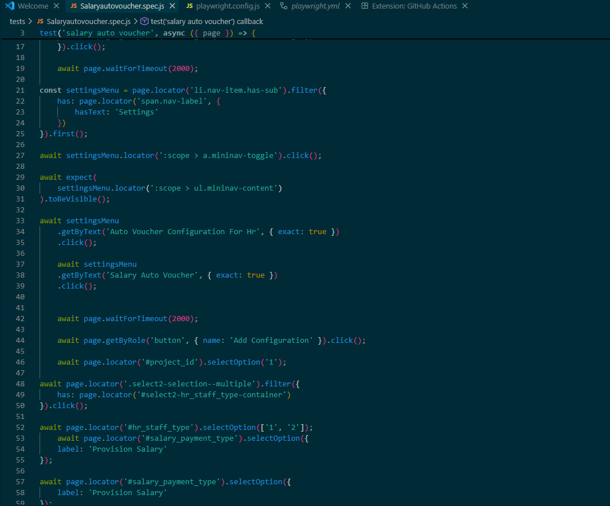

Manual Testing
Functional, regression, smoke, sanity, integration, system and UAT testing.
QUALITY • AUTOMATION • RELIABILITY
I'm Wasi Ahasan, an SQA professional focused on manual testing, API validation, defect analysis and Playwright automation for web applications.
01 / ABOUT
I work across the software testing lifecycle—from understanding requirements and designing test cases to defect reporting, regression verification, API testing and browser automation.
02 / TOOLKIT
Functional, regression, smoke, sanity, integration, system and UAT testing.
Browser automation, locators, assertions, workflows and regression scenarios.
Test scripts, async workflows and maintainable automation logic.
REST endpoint validation, request/response checks and integration testing.
Defect tracking, issue documentation and QA workflow collaboration.
Database validation and verification of application data.
Version control, project sharing and automation workflow management.
QA reports, test execution tracking and structured documentation.
03 / SELECTED WORK
Automated a multi-step ERP workflow involving nested Settings navigation, configuration creation, project selection, staff type and salary payment options.
Open screenshot ↗
Accounting and billing application testing across functional workflows, UI/UX, regression, smoke, sanity and UAT scenarios.
End-to-end testing of Admin, Instructor and Student portals, plus Playwright automation for regression and smoke scenarios.
Tested student lifecycle, examinations, fees, role-based access and repetitive regression workflows with Playwright.
Enterprise module testing, API testing, responsive testing and release verification.
Financial workflow testing, API validation, RBAC, MRA reports and SQL database validation.
E-commerce testing and Playwright automation for login, purchase and checkout journeys.
04 / EXPERIENCE
Manual testing, defect management, regression/smoke/sanity/integration/system testing, QA documentation, bug-fix verification and REST API validation.
Manual testing, UAT, API testing and collaboration with developers, business analysts and project stakeholders.
Client relationship management, CRM usage, inquiry handling, follow-ups and feedback collection.
05 / EDUCATION
Daffodil International University · GPA 3.23 / 4.00
06 / CONTACT
Interested in SQA, automation or a testing opportunity? Let's connect.